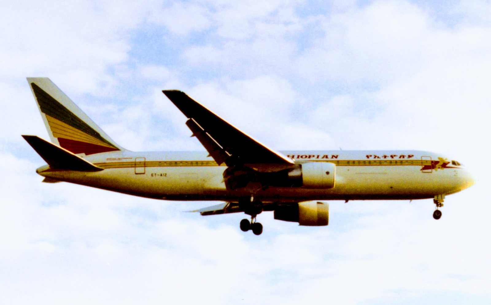
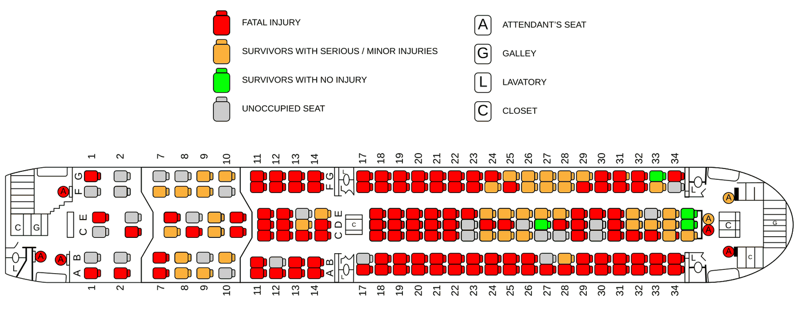

Three men took a Boeing 767 twenty minutes out of Addis Ababa and demanded to be flown to Australia. The captain told them the truth — that the aircraft was fuelled for a short hop to Nairobi and would never get close — and kept telling them for three hours, while the gauges emptied and the coast of Africa slid past below. They did not believe him. They were still not believing him when the engines stopped.
All times in this case file are UTC, which is how the investigation recorded them. Local time in Addis Ababa was three hours ahead; in the Comoros, three hours ahead as well.

Flight 961 was a workhorse routing: Addis Ababa to Abidjan, with scheduled stops at Nairobi, Brazzaville and Lagos. The first leg — Addis to Nairobi — is a little over two hours. The aircraft was fuelled accordingly. That single, unremarkable operational fact is the reason 125 people died.
ET-AIZ was a Boeing 767-260ER, five years old, in the airline's cream and green livery. Aboard were 163 passengers and 12 crew: 175 people, a mix of Ethiopian, Kenyan, Indian, French and American nationals, including aid workers, businesspeople and families.
In command was Captain Leul Abate, an experienced Ethiopian Airlines pilot with more than 11,500 flying hours, over 4,000 of them on the 757 and 767. Beside him sat First Officer Yonas Mekuria. It was the third time in four years that Captain Leul had been aboard an aircraft that was hijacked.
The aircraft lifted off from Addis Ababa at 08:09 UTC. For twenty minutes it was an ordinary flight.
At about 08:29 UTC, three young Ethiopian men left their seats and forced their way onto the flight deck. Their names were Alemayehu Bekeli Belayneh, Mathias Solomon Belay and Sultan Ali Hussein. Two were unemployed high-school graduates. One was a nurse.
They said they had a bomb. They said there were eleven of them aboard, and that the other eight were spread through the cabin ready to act. Both claims were false. There was no bomb — the object they brandished was a bottle of liquor with a cover over it, taken from the duty-free trolley. There were no accomplices. There were three men, and everything they had, they picked up on the aircraft itself.
Their actual weapons were the 767's own emergency equipment: a fire axe and a fire extinguisher, both stowed on board for use in exactly the sort of emergency they were about to cause. They used them. First Officer Yonas was struck and injured early on and kept working the flight anyway.
What they wanted was asylum. All three said they were fleeing political persecution in Ethiopia, and they had settled on a destination: Australia. They wanted the aircraft flown there, directly, and they were not interested in stopping anywhere first.
Three men, a fire axe, a fire extinguisher and a covered bottle of liquor. That was the entire hijacking.
— Everything the hijackers actually had, per the investigationCaptain Leul told them the arithmetic. Addis Ababa to Australia is somewhere over 6,000 miles. The aircraft was fuelled for a two-hour hop to Nairobi. It could not be done, not with a refuelling stop, not without one, not at all.
He explained it more than once. He explained it calmly, which was the only thing that had ever worked in the two previous hijackings he had lived through — a five-hour standoff aboard a Boeing 727 in April 1992, and a diversion to Sudan in March 1995. Both had ended with everyone alive. Both had ended because he talked.
This time the talking did not land. The hijackers had decided that the fuel warnings were a trick to make them give up, and no amount of pointing at gauges changed their minds. They ordered the aircraft flown toward Australia and told him to keep going.
So Captain Leul made the decision the entire case turns on. He did what he was told — and he did it along the East African coastline. Rather than strike out east over open ocean on a heading for Australia, he tracked south, staying within reach of land, so that when the fuel finally ran out there would be something underneath the aircraft other than several thousand miles of water. It was a plan built entirely around the assumption that he was going to have to put a 767 down without engines, and it is the reason anybody survived at all.
For three hours the aircraft flew south and the fuel quantity fell, and the argument on the flight deck did not change. The hijackers drank from the duty-free trolley. The captain kept flying.
Flight 961 takes off for Nairobi, the first of four legs, carrying fuel for a two-hour sector.
Three men force their way into the cockpit with an axe and an extinguisher, claim a bomb and eight accomplices, and demand Australia. First Officer Yonas is injured.
Captain Leul repeatedly explains the fuel state. The hijackers treat every warning as a negotiating tactic. He turns south along the coast rather than east into open ocean.
The right engine flames out from fuel exhaustion. The 767 is now on one engine over the Indian Ocean, with the island of Grande Comore ahead.
The left engine follows. The aircraft is a glider. Electrical and hydraulic power drop to whatever the ram air turbine and batteries can supply, and the captain now has one approach and no second attempt.
Grande Comore has an airport. Captain Leul went for it.
Prince Said Ibrahim International Airport sits on the northwest side of the island. With the engines gone, Captain Leul turned toward it — a genuine runway is always better than water, and a dead-stick 767 arriving at a real airport is a survivable event, as the Gimli Glider had already proved thirteen years earlier.
He did not get there. During the descent the fighting on the flight deck continued, and he lost visual reference with the airport. With no engines, no time and no ability to go around, he took the only option left in front of him: the shallow water off the beach on the island's northwest shore, about 500 yards out, in front of a resort called the Le Galawa Beach Hotel.
Ditching a widebody airliner is a manoeuvre that exists mainly in training manuals. It requires a nose-high attitude, wings exactly level, and the slowest possible speed. Captain Leul had a damaged aircraft, no engine power to control his rate of descent, and a man fighting him for the controls.
In the final seconds of the approach, with the aircraft descending toward the water and no power to correct anything, one of the hijackers reached for the controls.
The struggle in the cockpit meant Captain Leul could not hold the attitude a ditching demands. A successful water landing needs the wings dead level, so that the fuselage enters the water evenly and decelerates as one piece. Instead the aircraft arrived with a wing low, faster than it should have been — more than 175 knots, roughly 200 miles per hour.
The difference between a ditching people walk away from and a ditching that kills 125 of them is a few degrees of bank in the last four seconds.
— The physics of what happened off Le Galawa BeachEverything Captain Leul had done for three hours — the coastal routing, the fuel management, the airport attempt, the choice of shallow water near a beach with people on it — was aimed at surviving this exact moment. And in the moment itself, the men who had put the aircraft there took the controls away from him.
The left engine and wingtip touched the water first.
At just over 175 knots, an engine nacelle entering the water is not a landing gear. It is a scoop. The left engine dug in, caught the coral reef below, and the enormous asymmetric drag whipped the aircraft around its own left wing. The 767 cartwheeled.
The fuselage broke into three sections. The forward section, where the flight deck and forward cabin were, disintegrated. The centre section, over the wings, held together better than anything else. The tail separated.
It was over in seconds, in water shallow enough that parts of the wreck remained visible above the surface. The aircraft had come down roughly 500 yards from a beach lined with hotel guests.
Fifty people lived. Where they were sitting is most of the story — and so is what a large number of the people who died had done a few minutes earlier, believing it would save them.

Cabin crew briefings say to inflate a life jacket outside the aircraft, and there is a hard reason why. Many passengers inflated theirs in their seats during the descent. When the cabin flooded, an inflated jacket pins a person against the ceiling and makes it physically impossible to swim down and out through an exit. An unknown number of people drowned this way having survived the impact — though not, despite how often the case is told that way, most of the dead. See the note at the end of this file.
The fuselage broke at the front and at the tail, and the section over the wings stayed largely intact. Read across the seating plan above and the pattern is stark: the concentration of survivors sits in and around that centre block and near the overwing exits. There was almost nothing survivable about being in the nose.
The nearest organised rescue service was not close. What was close was a beach full of tourists and Comorian villagers, and they went in — swimming out to the wreck, pulling people from the water, using hotel boats and anything else that floated. Doctors who happened to be holidaying at the resort treated the injured on the sand.
Captain Leul Abate and First Officer Yonas Mekuria both survived, despite occupying the section of the aircraft that was destroyed. All three hijackers died. Six of the twelve crew were killed.
A South African tourist on the beach at Le Galawa was filming his holiday when a widebody airliner appeared low over the water in front of him. He kept the camera running because he assumed it was a display.
He filmed the final approach, the touchdown, the cartwheel and the break-up. It remains one of the very few catastrophic airliner accidents ever recorded on video as it happened, from beginning to end, from close range and in daylight.
The tape went around the world within days. For most people alive in 1996 it was the first time they had ever watched an airliner crash rather than read about one afterwards, and it is still among the most-viewed pieces of aviation disaster footage in existence — used in accident investigation training, in cabin safety briefings, and in a great many places with far less justification than that.
He thought it was an air show.
— Why the camera was already runningWe have not embedded the video on this page. It shows 125 people dying, the families of the dead are still alive, and the footage is trivially easy to find for anyone who wants it. What the footage gave investigators, though, was genuinely valuable: an unambiguous visual record of the aircraft's attitude, speed and wing position in the final seconds, which is normally the hardest thing in the world to reconstruct after a ditching.
Flight 961 changed how cabin crews brief a ditching, how airlines think about negotiating with hijackers who will not accept physical facts, and how one pilot is remembered.
The single largest preventable loss of life in this accident came from passengers inflating life jackets inside the cabin. The instruction had always existed; after 961 it was hardened and emphasised across the industry, and it is the reason your crew now tells you specifically not to inflate until you are outside the aircraft.
Standard hijack doctrine of the era assumed a hijacker could be reasoned toward a survivable outcome. 961 is the case study in what happens when the demand is not merely unreasonable but physically impossible, and the person making it refuses to accept that. It fed directly into how crews are trained to handle demands that cannot be met.
He was given the Flight Safety Foundation's Professionalism in Flight Safety Award. He had by then been hijacked three times and brought people home each time. He returned to the flight deck and continued flying for Ethiopian Airlines.
Injured by the hijackers early in the takeover, he stayed at his station and kept working the aircraft through three hours of hijacking, a double flameout and a ditching. He also survived, and he also went back to flying.
Hijacked in 1992, 1995 and 1996
He flew south so there would be land.
Off Grande Comore · 23 November 1996
Fifty came back out of the water.
Every fact in this case file was cross-referenced against at least two independent sources. All links open in a new tab.
Captain Leul Abate's own account, filed the day after the ditching. The primary contemporary source for the negotiation, the fuel warnings and the struggle for the controls.
A detailed reconstruction built on the official accident report, including the 170° coastal heading, the ditching dynamics and the injury breakdown among the dead.
Used for the timeline, the named hijackers, the crew's flight-hour records and the casualty breakdown, each cross-checked against the sources above.
Aviation trade coverage focused on the cabin crew's experience and the life-jacket lesson that came out of this accident.
Trade-press retrospective on the hijacking, the ditching and the accident's place in aviation security history.